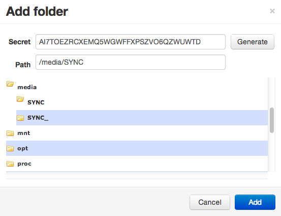

Notes Everywhere
I like to take long running notes, jotting down an idea here and there when one pops up. I never know which devices I will have with me, so I like to have these notes synced across all of them.
Previously I had been using the Chrome plugin QuickNote which is a light weight interface on top of the diigo cloud service. I had been using it for about two years and never had a problem until a few days ago. I somehow managed to lose about three months of edits. I still have not quite shaken that feeling of despair knowing I will never get my data back, but it did finally force me to beef up my note-syncing system. While I will primarily be using this setup to sync notes, it is by no means limited to only text files.
Enter BitTorrent Sync
BitTorrent Sync is a free utility that uses the bittorrent protocol to keep folders in sync across devices. It can be used with OS X, Windows, Android and Linux. It is not however open source, which might be a deal breaker for some. But if this isn't too big a pill for you to swallow, with a little bit of work you can use btsync as a free syncing solution.
While Dropbox requires you to keep a copy of your data on their servers, btsync never requires your data to inhabit a device you do not own. This is nice for security, but it means to sync between two devices they both need to be online at the same time. That is where the Raspberry Pi comes in. You can use the Pi as a node in your sync network, so a change to a file on any device will sync with the Pi and then other devices will get the change when they come online.
First we will set up the Pi as the central server and then we will connect our devices to it. (It is important to note however that the Pi is not a special "server" node, it is just a regular node like any other device.)
Installing BitTorrent Sync on the Raspberry Pi
NOTE: I am using Raspbian Wheezy, but I suspect these ideas will translate to other operating systems.
You need to grab the ARM build of BitTorrent Sync:
mkdir ~/.btsync && cd ~/.btsync
wget http://btsync.s3-website-us-east-1.amazonaws.com/btsync_arm.tar.gz
tar -xvf btsync_arm.tar.gz
Unless you have a large SD in your Pi you will probably want to use an external drive for your sync location. I will be using a USB thumb drive. You may need to format your thumb drive as EXT4 if you are having issues. (WARNING! This will erase all data on your drive)
df -h # find your drive here, e.g. `sda1`
sudo umount /dev/sda1 # replace sda1 with your drive name !
sudo mkfs.ext4 /dev/sda1 -L BTSync # replace sda1 with your drive name !
Now all you have to do is launch the btsync application and you will be up and running!
cd ~/.btsync
sudo ./btsync # can be killed with `sudo killall btsync`
If you see the following output btsync is properly running.
BitTorrent Sync forked to background. pid = 3003
Navigate your browser to Your-Pi-IP-Address:8888/gui to manage the btsync
process. To add the thumb drive select "Add Folder" and navigate to
/media/BTSync. You will need to generate a secret as this is the first time
you are adding the folder.


Other Devices
Now go download the Android app and/or the desktop app and connect them using the secret you just generated It's that simple! Any change on any device will be synced across all online devices. If you keep your Pi online it will store and push the most up to date content as your other devices go on and off line.
Extra Credit
Start at Boot
You may want to set btsync to start when you boot your Raspberry Pi. To do that
we will place a script in /etc/init.d/ and then register it with
update-rc.d.
sudo nano /etc/init.d/btsync
Paste the following code in the script
#! /bin/sh
# /etc/init.d/btsync
#
# Carry out specific functions when asked to by the system
case "$1" in
start)
/home/pi/.btsync/btsync
;;
stop)
killall btsync
;;
*)
echo "Usage: /etc/init.d/btsync {start|stop}"
exit 1
;;
esac
exit 0
Then change the permissions, test, and register it to run at boot:
sudo chmod 755 /etc/init.d/btsync
sudo /etc/init.d/btsync start # test that the script starts
sudo /etc/init.d/btsync stop # test that the script stops
sudo update-rc.d btsync defaults
Password Protect Web Interface
If you expose your web interface to the outside world (or if you don't trust
your friends) you are going to want to password protect it. This can be done
with a btsync config file passed to the executable at runtime with the
--config flag. First, use btsync to generate a sample config file, modify it
to fit your needs, and restart the process.
cd ~/.btsync
./btsync --dump-sample-config > btsync.conf
# browse the sample config file and change what you want
sudo killall btsync
sudo ./btsync --config btsync.conf
HINT: Use jsonlint to validate your config file if
btsync complains. Also make sure to modify the /etc/init.d/btsync script to
use the config file as well.
Questions? Hit me up on twitter @jackminardi
You can also follow the discussion on HN